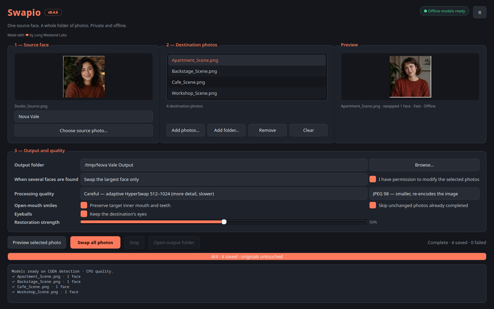
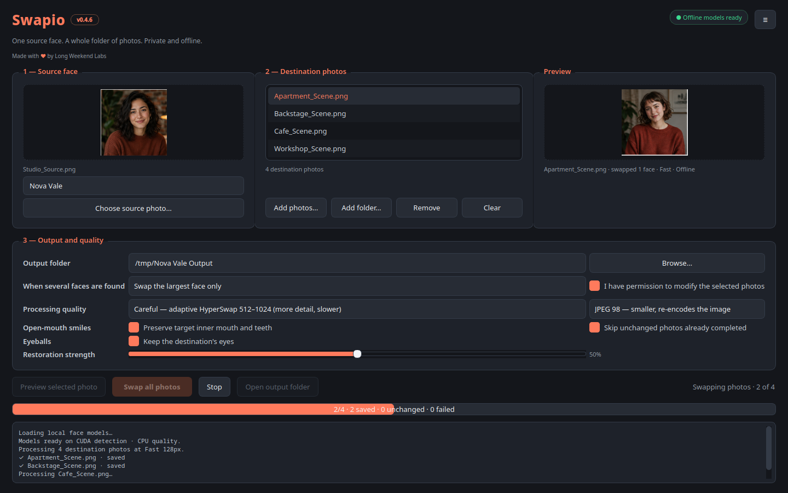

Offline batch face swapping
One face in.
A whole folder out.
Pick one source portrait and swap it into every destination photo in a folder. Preview the result, choose the faces to change, and keep the rest of each image intact.

Built for the batch, not the demo.
Feed Swapio individual photos or a folder tree. Failed files are reported without stopping the run, and a repeated batch skips photos that have not changed.
4quality modes, from quick drafts
to high-detail rebuilding
to high-detail rebuilding
Visible progress
See the queue move.
Track the current file, completed results, and anything that needs attention. Original photos are never modified.
